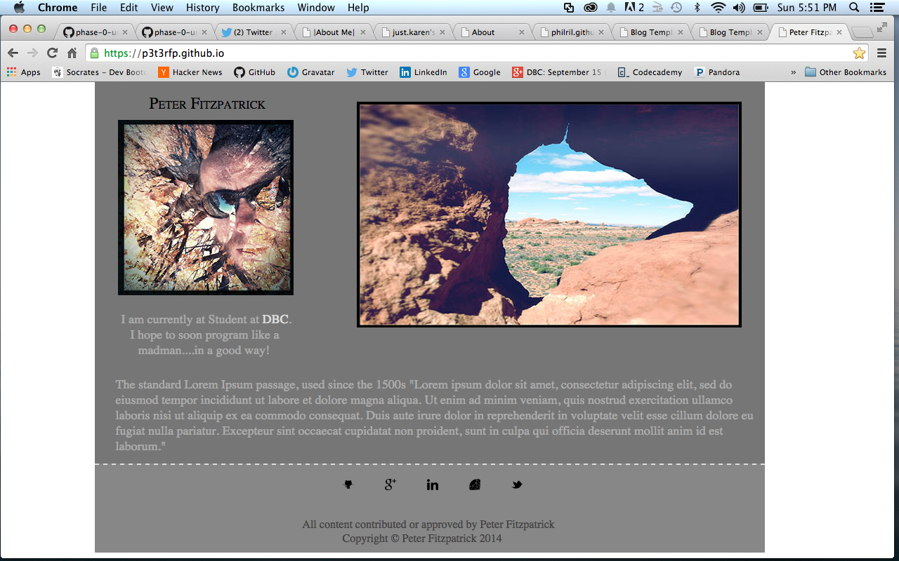

So I've gained a pretty solid grasp on the differences between margins, borders and padding. All three of these changes affect an element in a different way, and also how the element relates to others around it. Without further ado....
Let's start with borders. Borders are probably the most simple to understand. These simply surround the element, and can be applied to a single side, such as the top or bottom to form a line break. That's what I did with my footer:
#footer { background-color: #878787; width:954px; height:125px; border-top: 2px dashed #dddddd; margin-left:10%; margin-top:-16px; color: #444444; }
Well then, I suppose the next item up would be margin, and I feel like it relates to the border of an element. I you were to put a border all the way around an element, you could then see how changing that element's margin will affect it. If you were to give it a top-margin: 50px, you would see the distance between that element and the next element it relates to increase by 50 pixels. This works on all sides of the element. You can also set negative values for the margin to pull elements closer together, or even overlap.
Finally, we have padding of elements. I like to think of this as actually "within" the element. You can look at this at work again by applying a border all the way around the element. If you want the content inside of an element to move away from the border, you would apply padding-left, padding-right, padding-top, or padding-bottom to move it right, left, down, or up respectively. The use of padding really allows you to get content centered and display in a manner that you want.
Thanks for trying to see it from my perspective.
All content contributed or approved by Peter Fitzpatrick
Copyright © Peter Fitzpatrick 2014